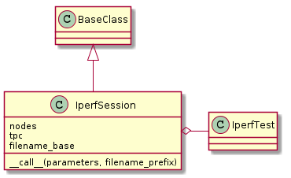

The IperfSession¶
An adapter to make the tools match the use of multiple nodes. It extracts the correct node and determines if it is acting as the client or server based on the parameters passed in, then calls on the IperfTest to run the test.

The Iperf Session¶
The IperfSession bundles nodes and the Iperf Test.
| IperfSession(iperf_test, nodes, tpc[, ...]) | A bundler of nodes and the iperftest |
| IperfSession.from_node_expression | Regular expression to determine if it is an upload. |
| IperfSession.to_node_expression | Regular expression to determine if it is a download |
| IperfSession.participants | |
| IperfSession.filename(parameters, ...) | Adds extra tags to the filename to make identifying them easier |
| IperfSession.__call__(parameters[, ...]) | Retrieves the participating node and runs the iperf_test |

- See IperfTest
- nodes is a dictionary of id (key`) to device (value) mappings.
- tpc is a built device for the traffic-generating PC
The Call¶
The __call__ takes a namedtuple (parameters) and an optional filename-prefix that it will add to the output file (if given):
sender_receiver = self.particpants(parameters)
filename = self.filename(parameters, filename_prefix)
self.poll = self.iperf_test(sender=sender_receiver.sender,
receiver=sender_receiver.receiver,
filename=filename)
- self.participants gets the node and direction from the parameters and returns a SenderReceiver
- self.filename creates a string with the suffix .iperf
- self.poll is set in case meaningful output is returned and a user of the IperfSession wanted to retrieve it later